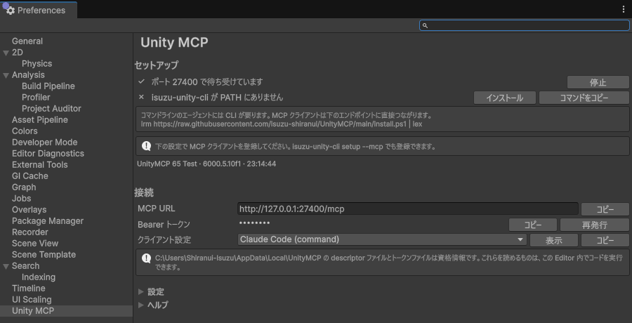
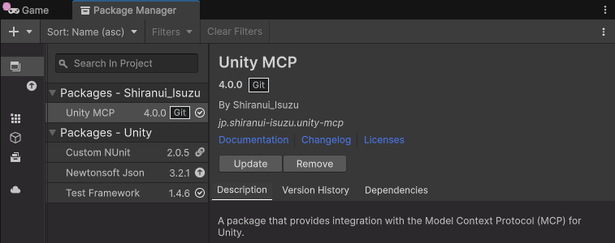
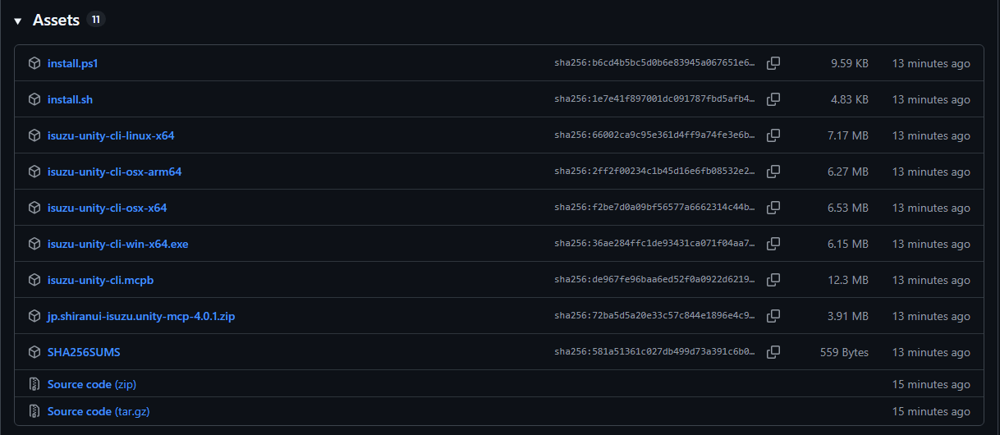

Unity Editor を AI エージェントにつなぐパッケージです。話しかけると、シーンの中を見たり、オブジェクトを追加したり、Console に出たエラーを読んだりします。Claude Code、Claude Desktop、Cursor、Codex、Gemini CLI、VS Code から使えます。
コマンドを一行も打たずに入れる方法があります。ターミナルを開く必要はありません。

VRChat Creator Companion（VCC）または ALCOM でプロジェクトを管理しているなら、VPM リポジトリから入れられます。この方法に Git は要りません。VCC と ALCOM はパッケージを zip でダウンロードするので、Unity の Package Manager のように Git を呼び出さないためです。
次のリンクを押すと VCC または ALCOM が開き、リポジトリを追加してよいか確認する画面が出ます。VCC は 2.1.0 以降が必要です。
リンクが働かないときは、この URL を貼り付けて追加します
https://unity-mcp.shiranui-isuzu.dev/vpm.json貼り付ける場所は、VCC では Settings ページの Packages タブにある Add Repository ボタンです。ALCOM では「パッケージ&テンプレート」の「VPMリポジトリ」ページにある「VPMリポジトリを追加」ボタンです。追加すると、プロジェクトのパッケージ一覧に Unity MCP が並びます。この方法で入れた場合は、下の手順 A と手順 B の 1 番目を飛ばして、2 番目から読んでください。
全部で 5 手順です。この手順にコマンドは出てきません。
Unity Editor のメニューから Window > Package Manager を開きます。左上の + ボタンを押して Add package from git URL を選び、次の URL を貼り付けて Add を押します。
https://github.com/isuzu-shiranui/UnityMCP.git?path=jp.shiranui-isuzu.unity-mcp
上の「VCC・ALCOM」の方法で入れたなら、この手順は要りません。次へ進んでください。
Unity Editor の Preferences を開き、左の一覧から Unity MCP を選びます。Windows では Edit メニューの中にあります。セットアップの一番上の行が「✓ ポート … で待ち受けています」になっていれば、Unity 側の準備は終わりです。
サーバーはプロジェクトを開いたときに自動で起動します。自分で開始する操作は要りません。2 行目の CLI は、この手順では要りません。
GitHub の Releases ページを開き、isuzu-unity-cli.mcpb というファイルをダウンロードします。

isuzu-unity-cli.mcpb が並びます。その名前をクリックするとダウンロードが始まります。ダウンロードしたファイルをダブルクリックすると、Claude Desktop が拡張機能の導入画面を出します。Unity project name の欄は、Unity を 1 つだけ開いているなら空欄のままで構いません。
この拡張機能は自己署名です。Claude Desktop は導入時に、署名されていない拡張機能である旨の警告をログに書きます。動作には影響しません。ファイルをウィンドウにドラッグしても、Settings > Extensions > Advanced settings > Install Extension から選んでも、結果は同じです。
ダブルクリックしても画面がすぐ閉じてしまう場合は、Microsoft Store 版の Claude Desktop で知られている症状です。ファイルの拡張子を .zip に変えて展開してください。同じ画面の Install Unpacked Extension で、そのフォルダーを選びます。
対象のプロジェクトを Unity Editor で開いたまま、Claude Desktop に用件を書きます。Unity Editor を閉じていると何も動きません。
コマンドラインのツール isuzu-unity-cli を入れます。配布している実行ファイルはネイティブなので、Node.js も .NET ランタイムも要りません。
手順 A の 1 番目と同じです。Window > Package Manager を開き、Add package from git URL に次の URL を貼り付けます。
https://github.com/isuzu-shiranui/UnityMCP.git?path=jp.shiranui-isuzu.unity-mcp上の「VCC・ALCOM」の方法で入れたなら、この手順は要りません。
ターミナルで次の 1 行を実行します。
Windows（PowerShell）
irm https://raw.githubusercontent.com/isuzu-shiranui/UnityMCP/main/install.ps1 | iexmacOS / Linux
curl -fsSL https://raw.githubusercontent.com/isuzu-shiranui/UnityMCP/main/install.sh | sh.NET SDK が入っている場合は dotnet tool install -g IsuzuUnityCli でも入ります。Releases から実行ファイルを直接ダウンロードすることもできます。Editor の Preferences > Unity MCP にある「インストール」ボタンからも入ります。
Claude Code と Codex 向けのスキルを導入します。
isuzu-unity-cli setup次の 1 行で、接続先の URL とトークンの登録まで終わります。トークンを自分で扱う必要はありません。
isuzu-unity-cli setup --mcp --agent claude-code--agent には claude-code、claude-desktop、codex、cursor、gemini、vscode を指定できます。実行するには Unity Editor が起動している必要があります。全コマンドは CLI リファレンス、クライアントごとの設定は MCP クライアントの接続 にあります。
Unity Editor は最大で 88 個のツールを公開します。Timeline と Recorder のツールは、それぞれのパッケージが入っているプロジェクトにだけ現れます。どちらも入っていないプロジェクトが公開するのは 75 個のツールです。一覧は ツール一覧 にあります。
ツールはすべて起動中の Unity Editor に対して動くので、Editor を閉じていると何も返ってきません。プロジェクトを開き直し、Preferences > Unity MCP のセットアップの一番上が ✓ になっていることを確かめてください。
Unity Editor を複数起動していると、どのプロジェクトにつなぐかが決まりません。Claude Desktop の拡張機能の設定にあるプロジェクト名の欄に、Unity Editor のタイトルバーに出ている名前を入れてください。Player Settings の Product Name でも通ります。どちらの名前でも複数の Editor に当たってしまう場合は、他の Editor を閉じるのが確実です。
クライアントごとの設定を読むパッケージの追加や削除でツールが増減しても、その通知はクライアントに送られません。使っているクライアントを接続し直してください。
トラブルシューティングを読む